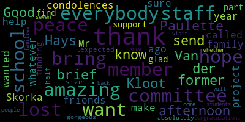

[SPEAKER_04]: Good afternoon, family members, faculty, staff, students, volunteers, esteemed members of the school committee, and Medford Public Schools Administration. We would like to welcome you all to the dedication of these memorial gardens to honor the seven lives lost during the height of the COVID-19 pandemic. Let us now take a moment of silence to remember all of these amazing educators that are no longer with us. Lisa Iannelli. Frank D'Alessio. Sue Bratton. Betsy Burns. Dennis Moriarty. Anne Glencross. and Kevin Hickey. I would now like to invite up Paul DeLeva, principal of the Medford High School, to say a few words.
[D'Alleva]: So first and foremost, I'd like to thank everyone that's here for our dedication today. We have a lot of school committee members and everybody that's been really a part of this project. And this project started off as the beginning of a CCSR project and I want to give credit to Miss Rebecca McGinnis as she was a real driving force for this to happen. She did all the research. She did everything of meeting with the landscapers and even to the point where, you know, funding was becoming somewhat of a problem. She was able to secure that with the CCSR and make this happen, which is nothing short of a miracle of a gorgeous space that is being used here. With the people that we're dedicating, I've been blessed in my life that I've known them in some capacity of being a principal or being a teacher and just watching them as I was growing as an educator and watching them be somewhat as mentors to where we are today. One thing that I always kind of attribute is with this garden is from the book Tale of Two Cities by Charles Dickens. I think everybody focuses on the beginning where it's the best of times and it's the worst of times. But I always take the last little bit as more of an understanding of what can be gained and what can be lost. So in the book of A Tale of Two Cities, the last thoughts of Sydney Carton, who was representing France at the time, is expressing a rebirth. And the things that she had stated is, I see a beautiful city and a brilliant people rising from the abyss. and in their struggles to be truly free and their triumphs and their defeats. Through the long years to come, I see an evil of this time and the precious time which is given natural birth and gradually making expansion of what itself is wearing out. I see the lives for which I lay down my life, peaceful, useful, prosperous, and happy. And that England, which I shall see no more, obviously against England. I see I hold a sanctuary in their hearts and in the hearts of their descendants, generations hence. I see her, an old woman, weeping for me on the anniversary of this day. I see her and her husband, their course done lying by side by side in their lastly earthly bed. And I know that each one is not more honored or held sacrifice than the other soul. That is, I was in the souls of both. I see a child that lays upon her bosom, who bore my name, a man willing his way, upon a path of life which was once mine. I see him winning it so well that my name is made illustrious by the light of his. I see the bolts I threw upon it faded away. I see him foremost. of those just judges in honors of men, bringing a boy of my name with a forehead that I know golden hair is to be placed. Then fare lock upon with not a tense of this day's disfigurement, and I hear them tell the child my story with a tender and falling voice. And then the final, most important thought, it is a far, far better thing that I do than I've ever done before, and it's a far, far better rest that I go than I've ever known. And when I hear these words, I think of the lost staff members that we had during the pandemic, and it really resonates with my soul. So I hope you share those sentiments. And again, thank you for everyone that has come, as well as been part of this dedication. So thank you.
[SPEAKER_04]: I'd now like to invite up Chad Fallon, the principal of the Medford Vocational Technical High School.
[Fallon]: Good afternoon. Welcome to our school and thank you for attending this special dedication ceremony in remembrance of our staff and faculty members that have left a lasting impression on our school community. This memorial garden was truly a collaborative project and I was able to see the project from idea to conception. The dedication of this group of educators, community members, and students is truly a partnership we can be proud of. As the proud principal of Career and Technical Education here in Medford, it was no surprise to me to see so many of our students in various programs taking part in the project. I heard laughter, idea sharing, and friendly banter about the placement of bushes, lights, and so forth. But what I saw was even more remarkable. I saw a community come together to create a space for reflection and remembrance, and I saw the pride in the faces of all who took part as the project was completed. Thank you to all who made this possible. I will say, too, even in the hottest days of the summer was Rebecca and Spencer watering this beautiful garden to keep it going when all of our lawns are probably brown. So I think that needs to be mentioned, that you guys really did a nice job. Thank you.
[SPEAKER_04]: Over the last 13 months, these gardens were created to memorialize and celebrate each of the individuals from the Medford Mustang community who passed over the course of the last two years due to COVID-19 and other serious illnesses. These individuals were kind, caring, generous, and committed to the betterment of the students and the entire Medford community. Because of the pandemic, we as a Mustang family were unable to process and heal from these great losses in a way that we previously would have. We realized how important it was to have a physical space for students, staff, and families to reflect, heal, and connect with those they have lost. We believe that through the creation of these gardens, here on the vocational side, and by the high school bus loop, we are addressing the social emotional needs of the faculty, staff, and students. This project has hopefully demonstrated to students and staff that they can and do matter to others, and that they do have a lasting impact on the school, those individuals within, as well as the community as a whole. This project began as a small idea, which turned into a large undertaking that proved to be both restorative and powerful, in that it brought together and connected so many people. These gardens began as an idea on a Zoom call between Mr. Duleva and Mr. Fallon, who agreed to let us proceed with this project. Then, after many emails, meetings, funding from the mayor's office, and generous personal donations, the project began to take hold. We also saw a large outpouring of support from many members across our Mustang community who wanted to help us with this project. In hindsight, we were perhaps naive in thinking that this might be a relatively easy and quick project, but after 13 months, we can say with great certainty, we were very wrong. without the numerous hours of help, both physical and emotional, from administrators, members of the mayor's staff, and all of the teachers, staff, and students from the construction and craft labor shop, electrical shop, cabinetry, graphics, robotics and engineering, Stephanie McCauley, Gina Citrano, Norm Rousseau, John Brown, Carly Perrin, the Special Education Department, the CCSR, Mr. DeLava, Mr. Fallon, and all of the other staff and students who were integral in completing this beautiful project that you see here today. None of this would never have happened. What is so special about this garden is that because it is composed of native pollinator species, it will continue to grow each year and give back to the plants and animal species that surround us, reinforcing the spirit of giving, the restorative power of nature, and bring healing to those who come to spend a moment in both of these gardens. I will now read a poem from an anonymous author that embodies those we lost. One tree can start a forest. One smile can begin a friendship. One hand can lift a soul. One word can frame a goal. One candle can wipe out darkness. One laugh can conquer gloom. One hope can raise our spirits. One touch can show you care. One life can make a difference. They were the ones. And now I'd like to invite up Mateo de Vita to read an original poem.
[SPEAKER_13]: Thank you, Mr. Skorka. I'm really honored and touched to be asked to speak here. I have a poem to read that I wrote about the teachers at Medford High that have helped shape me, and I feel I owe so much to the members of this community who are gonna be commemorated today, and I'm really grateful to be a part. This is Overpass Sunbeams. The epigraph is Voltaire. We must cultivate our gardens. The third floor overpass exposes our best ignored asset. On bright days, light spills in through the ceiling high windows onto the floor of the walkway, onto its cracked and sliding tiles, illuminating the ground. Some days the sunbeams point my way to class. Other days they draw my eyes outside to the fells. Here we are carved from an unruly brush. Something wild seeps into our classrooms, sits at our desks, sharpens its pencils, and in those desks it blossoms. Every day our community plants flowers in padded down paths to sow anew over where we want to grow higher. My teachers keep gardens, tending, grooming, raising the buds until they learn to reach for the sun themselves. Every day, an army of overpass sunbeams orients me and guides me through jungles, concrete and verdant, shining their sunlight to make me grow. Who has crossed these tiles? The people seen and unseen, dedicating days to this place, these aims, until they are gone and leave but a blossom. Our school sits hidden between trees and trails, and yet, from its homegrown summits, its tallest trunks can see the city. Thank you.
[SPEAKER_04]: Thanks, Mateo. We are now going to hear from people who would like to speak on behalf of each of these people we have lost. We're first going to hear from John Brown and Andre Fatour, who will speak about Dennis Moriarty.
[SPEAKER_05]: Paper, rock, scissors? Paper, rock, scissors? Good afternoon, everyone. I have a voicemail saved on my cell phone from the evening of March 19th, 2019. It's from Dennis Moriarty. He was very excited when he left the message. And the message he's reminding me of the next day was the annual breakfast at the high school sponsored by the PTO. And he wanted me to remember to bring Tupperware so we could sneak out leftovers for lunch. And I'm grateful to have this message, to hear Dennis' voice, and to remember how much he used to make me laugh. And I'm grateful that I can still listen to this message and he can still make me laugh. Dennis loved life and loved to be around people. and he enjoyed sharing experiences with his friends. I became close to Dennis through our love for fishing and went on dozens of deep sea fishing trips with him. Henry David Thoreau once wrote that many go fishing all their lives without knowing that it is not the fish they are after. I'm pretty sure Dennis never read any Thoreau. But if ever a person were to epitomize this expression, it would be Dennis. Dennis spoke to total strangers like they were old friends and would offer words of encouragement to anyone around him on the boat. If someone were hungry, Dennis would offer to share his food with them. By the end of the trip, most people would know Dennis by name. And Dennis was a sight to behold on the ocean. He may have been one of the oldest and saltiest gentlemen on the boat, but he would tirelessly and relentlessly pull fish up from depths of over 200 feet and gracefully get them over the rail. I could never keep up with him, and he liked to remind me throughout the day while grinning from ear to ear that I wasn't keeping up with him. Quite a few times I found myself with Dennis in the middle of the Atlantic with the boat rolling through swells in excess of five feet. And Dennis would be bouncing around the boat nonstop like a pinball, banging into anything and everything. And in the middle of all of this, he would find a way to stabilize himself and look at me and selflessly ask, John, are you all right? And that's who Dennis was. Dennis always caught fish, even when the rest of the boat wasn't. He was especially proud of his largest fish of the trip sticker that he earned on the Bunny Clark in Maine. And he had this sticker prominently displayed in the kitchen of the old Cafe Electra and always tried to find a way to unabashedly work the sticker into a conversation so that he could brag about his achievement. And it was never hard to tell when Dennis had a successful day in the water, as the culinary students would be as busy as the Keebler elves that week, making Dennis' famous fish cakes to be sold in the bistro. And Dennis would be glowing in his glory and full of pride, leading them through the lesson. If you were fortunate enough to do something with Dennis, it would be smiles and laughter, a lot of it. Whether it was fishing, riding motorcycles, hunting, going out for dinner, or traveling to Cuba where Dennis was fortunate enough to spend time in a Cuban hospital, or just spending some time having a cup of coffee in the bistro, Dennis always made each event special and memorable. While his loss has been overwhelming, the memories of laughter and camaraderie and the voicemail will last a lifetime.
[SPEAKER_03]: Are there really words to describe the irreplaceable Dennis Moriarty? Yes, but some might need to be censored. Dennis was a person with strong convictions and strong sarcasm. Fierce defender of his craft and his friends, he took the utmost pride in his work in the culinary arts. He really made service an art form. Never was it more evident than when you watch the students he trained, especially for the front of the house. Their level of professionalism and precision in service could only stem from the high standards that Dennis set. Dennis was so good at his craft that he could anticipate your needs before you did, always two steps ahead. He was also a charmer. He loved to socialize with people and charm them with his witty smile. Dennis always remained young at heart. He loved to have a good time and he loved to travel. I am forever grateful that we got to go to Cuba on that group trip. He certainly was a big reason why that trip was one of the best times of my life. I will not talk about the hospital incident. Though he never could quite get his Spanish down. But in the end, the one thing that I think most people remember with fondness is his friendship. Always a good listener, spending time with him was knowing you were with someone who always had your back. There will forever be an empty spot behind the culinary counter and in my heart that can never be filled. Thank you.
[SPEAKER_04]: Thank you, John. Thank you, Audrey. We are now going to hear from Carly Perrin, who will speak about Lisa Iannelli.
[SPEAKER_08]: I'm honored to speak about my friend Lisa Ionelli. I will always picture Lisa poised in her impossibly high heels and impeccably tailored suits, usually in a deep shade of purple. But Lisa was so much more than just stylish. She took me under her wing when I was a new teacher, and she was an invaluable mentor to me, both personally and professionally. She made sure I took the right classes and had a welcoming place to eat lunch every day. She doted on my daughter as she did on her son, Johnny, and we enjoyed spending time together. She loved the warm weather and taking her beloved dog, Jack, for walks. She worked hard to get her administrative license and took pride in doing her job well. Lisa was a loyal and caring friend who was a strong shoulder to lean on for many, many colleagues throughout her career working in the Medford Public Schools. We shared countless laughs over our 20-year friendship, and a few tears, too. She was a trusted and beloved teacher who could be tough on her students, but those high expectations were always born out of love. Her door was never closed and she was quick with a smile and a piece of candy when he really needed a pick-me-up. She was a loving mother, sister, and daughter who was fiercely proud of her family. She was a strong woman who bravely faced her health challenges with grace and without ever complaining. Lisa meant a great deal to many people, and I'm thrilled that this memorial garden will be a place where her spirit can be embodied and remembered in the flowers that bloom here in front of this school, where she helped so many young minds grow. Thank you.
[SPEAKER_04]: Thank you so much, Carly. We are now going to hear from Maria Dorsey and Max Heinig, who will speak about Frank D'Alessio.
[SPEAKER_09]: Good afternoon, everyone. Knowing Frank D'Alessio was an honor, which I always knew, but never more clearly than I know it now, after living all this time without his presence in my life. Frank was a gentleman, loving, loyal, and honest. Frank was helpful and would do whatever he could to assist, whether it was a technology issue or a personal problem, and he was highly intelligent, with a recall of facts and information that was astounding. Frank loved his God above all else, and anyone who spent more than a few minutes with him knew this. He had a spiritual connection with his maker that made some uncomfortable, including leaders in his church. But Frank was steadfast in what he knew in his heart and believed with every fiber of his being that he was inspired by God. I call a person like him an apostle, the only one I ever knew. The only time Frank ever got frustrated was when any detail of his retirement plan went awry. He was single-minded in making sure all his ducks were in a row. How he looked forward to retirement with his family, his grandchildren, and times at his happy place, Disney World. How he adored them all. I could cry to think it will never happen. We all know Frank loved Disney, but he also loved bowling, and choosing the right bowling ball from his collection, creating Christmas villages, talking about the merits of a Subaru versus a Hyundai, and his vacation to the White Mountains were great conversation for Frank. He was sad when he made the decision not to return to New Hampshire the year before he left us after so many happy summers there. Perhaps if he had booked it one more time, I spent a lot of time with Frank and he helped me through some personal problems and life events, even though my faith differed from his. He prayed over me, over my daughter as she struggled, over her newborn, and he prayed over my sister both before and after she passed. He brought me peace. I have no doubt that Frank is also at peace. When he went into the hospital, he told me that this was God's will, whatever happened, and he was unafraid. What a comfort that must have been to him. It is a comfort to me that his faith was that strong. Frank was a wonderful, supportive, and dear friend and co-worker, and I will miss him always.
[UM6Hbf_Z6LM_SPEAKER_18]: After Frank passed, I decided to write an elegy for him because I had shared so many great moments when he came to help me. So this is an elegy for Frank D'Alessio, a computer technician at Medford High School. Sometimes the light of my desktop would not come on. The fan would spin, just pushing dead air. The classics waited. You'd come, and if there was life inside, you brought it back. When it was doomed, you brought fresh tools. In the side of the library, you worked happily for years, skillful fingertips rough from soldering. A mechanical room in triage, each patient you would see too soon. When I panicked, you'd hustle up the stairs and stayed after school. You didn't need thanks. You smiled through 14 years of work many of us lamented, dreaming out of small windows at trees that never saw full sun. When last I saw you, masked, when the district chose to open doors, you set me up again and I could teach. Now mornings begin as the small light returns and the whiteboard shines words, black and clear as wisdom made fresh by attention. How many learned by the light you made come on for all of us?
[SPEAKER_04]: Thank you, Maria. Thank you, Max. We're now going to hear from Michelle Hardy and family, who will speak about Annie Glencross.
[SPEAKER_07]: Okay, bear with me. I am very fortunate to have had Annie Glencross in my life as a co-worker and a family member. Annie was my aunt, my godmother, like my second mother. Annie began working for the school department in 1970. Always willing to help others, she suggested I take my civil service test after graduation. Her office in food service was looking to hire another secretary, And how great would that be to work with someone I already loved? 35 years later, here I am working for the city. After many years working in food service, Annie transferred to the vocational office. Here she made many friends who quickly became her second family. During our family gatherings, Annie would often speak of her work family. She was happy to share with us their accomplishments, milestones, and many pictures. We felt we knew each individual personally just from Annie's stories. The staff and students knew Annie was there for them no matter what. She welcomed all with her beautiful smile. She offered a listening ear, a shoulder to cry on, many hugs, and most of all, access to her snack cabinet. The day of her funeral proved to us how special she was to all. As the procession drove past the high school, Winthrop Street was lined with staff, current and former students, and friends clapping and waving, as was the entrance to the cemetery with fellow administrative assistants whom she worked with for several years. As much as her family, her work family, was special to her, her family was her whole life. She enjoyed the time spent with her two daughters, Charlene and Paula, and loved having them close by. She was so proud watching her four grandsons grow up to be the amazing men they are today. She loved their wives as granddaughters, and her great-grandchildren made her life complete. We appreciate you keeping Annie's memory alive with this beautiful memorial. And how fitting is it that the garden is right outside of her window that she looked out for for so many years? Thank you.
[SPEAKER_04]: Thank you, Michelle. I would like to welcome back Carly Perrin, who will speak about Betsy Burns.
[SPEAKER_08]: Unfortunately, Joan Bowen couldn't be here today. I'm reading her words. This is her tribute to Betsy Burns. Betsy was a dedicated and compassionate special educator. She was a true advocate for her students and was very passionate about teaching math. Betsy was always checking in with her colleagues and was a mentor for new special education teachers. She developed and maintained close relationships and was always found eating lunch in the learning group classroom and holding animated debates with Jack Pastor. Betsy loved to travel and one of her favorite places to visit was the most magical place on earth, Disney. She absolutely loved going to Disney and was a huge fan of all things Disney. Betsy loved planning her many expeditions to Disney and traveling with her nieces. We all loved and looked forward to hearing about her adventures. Strong, caring, and kind are just a few ways to describe Betsy. Several years ago at the beginning of a new school year, Betsy unexpectedly lost her husband and also received devastating news that she was diagnosed with breast cancer. Betsy fought through these difficulties. She attended school as much as she could during her treatment. She never complained and never felt sorry for herself, nor would she let anyone else. One of my last memories of Betsy was when she stopped by my office one day to contribute her donation for a colleague who was sick. She had just come from receiving a chemo treatment and was more concerned about the staff person and what they needed. And as a breast cancer survivor myself, I can't tell you how much Betsy helped me personally going through my journey as well and never complained about what was going on with her and was always just so caring with me. You know, this is the epitome of Betsy, always thinking of others and helping out whenever possible despite how she was feeling or what was going on with her. We all miss her spirit and kindness as we walk by her old classroom, A201. The halls of MHS will never be the same, but we're glad we have this garden here to remember her. Thank you.
[SPEAKER_04]: Thanks again, Carly, and thank you for those words, Joan. I'd like to now invite Krista Murphy to say a few words about Sue Bratton.
[SPEAKER_10]: I think I should start by saying that a few paragraphs does not sum up Sue Bratton. The picture in the program is literally a snapshot of who she was. Sue Bratton, or the British, as a lot of the kids called her, was truly one of a kind. She worked as a dedicated parent professional, union treasurer, and value colleague at Medford Public Schools for 26 years from 1995 to 2001. Sue worked with countless children with a wide variety of special needs and had a special place in her heart for all the students, even the toughest kids to love. She was a tenacious and relentless advocate for her students. She would fight tooth and nail to make sure that all kids got what they needed to be successful. As a colleague she never missed recognizing a birthday anniversary or special life event. We will miss her quick wit invaluable advice and her great laugh. She really had a way of making everyone she interacted with feel seen and appreciated. I know I speak for a lot of people at the high school when I say we miss her every day and we are so happy to have this beautiful play area at our school to remember her by. Thank you.
[SPEAKER_04]: Thank you, Christa. Now I'd like to invite up Alice Beth Fitzpatrick to say a few words about Kevin Hickey.
[SPEAKER_11]: First of all, I don't think my few words can nearly touch the feeling and sentiment that many of you have about Kevin. But I want to thank you for the opportunity to speak today. So my office is right there. I have watched this garden go from conception to dedication. As I have watched, I've processed some of my own feelings of grief and loss that we've all endured over these past few years. Grief is challenging, and we all manage it differently. Having a network of support people is one thing that can help us through our grief. This network or family connection is embedded in the culture of the vocational school and is something that I credit our former educators for fostering. Kevin Hickey, a former guidance Councilor at MBTHS, helped to show me the importance of the Volk family. Though he had retired, he called me at the start of every school year for many years just to check in and see if there was anything I needed to support our students. In the spring, he would stop by and ensure the students were able to attend the senior banquet. He embodied the Volk family spirit, and his connection and positive impact on students was enduring. As I have observed the growth of this garden, I feel like Kevin would most value and be most honored by the efforts of the greater Volk family, a family that extends beyond CTE students and staff and includes our family, friends, fellow students, and educators who have helped to cultivate and support this project. Thank you all for being here and for the work that you've done to honor those who we love and help us continue to grow this family connection throughout our school community.
[SPEAKER_04]: Thank you, Alice Beth. I'd now like to invite up the superintendent of Medford Public Schools to say a few words.
[Edouard-Vincent]: Good afternoon to everyone. On this celebration of life and the marking of this special memorial garden, I am here to say that I too have been moved by all of the words that were shared this day by the members of our staff. Although we have this memorial garden that is here in this wonderful plaque, which lists everyone's names. As I look at this garden and I see the beautiful flowers, the flowers will continue to give life, bring life, bring joy, bring peace, bring happiness, bring healing to everyone. The pandemic really gave us a curve ball. And we are all healing in different ways. And although we are moving to the other side of it right now, we still have the scars of what happened during that time. For all the family members that are here, I extend my sincere condolences to all of you. for your loved ones that are no longer here. But please know that as you look at this beautiful garden, we are honoring your loved ones and we are celebrating their life. We are celebrating their spirits and their contributions that they made to the Medford Public Schools. And so I wanna say thank you to all of you who came today to celebrate. the life of your loved ones, and to let you know that we here in Medford Public Schools will always remember and honor them. May their souls rest in peace, and may we all continue to receive joy, peace, and happiness from this garden. Thank you.
[SPEAKER_04]: I'd now like to invite up the director of the CCSR, Rich Trotta, to say a few words.
[TYJHfPvQgEo_SPEAKER_12]: I just want to say that this event is quite an honor for all these people. One of the tenets of the CCSR is making the world a better place, and these people did that. The world is a better place because they were here, and so with that in mind, We're committing to support this memorial garden for as long as the CCDR exists. It will be part of our annual cost and support will definitely be there to take care of it and to make sure that it doesn't go away. We've all seen too many things go away, but this is not going away as long as we're here. I want to thank Michael and Rebecca for putting this together. They did a fantastic job and we are all thankful for what you've done. I just want to thank Chad and the vocational school staff for doing this fine work, the school committee and the superintendent and central office. One of the things that is clear to me after doing the CCR so long is that it really takes a village to make things happen and this is a perfect example of that and I'm so proud that we're a part of it and always will be. One last thing I have to do, and I apologize for this, I have to shout out to Michael Skorka. Michael's final activity is this activity. He's now moving on to be a full-time teacher. I'm sure you realize that the CCSR has been a great success, and Michael has been a great part of that. And somebody asked me, well, who's gonna replace Michael Skorka? I said, no one, no one can. And Michael, you know, there's a saying in education, a teacher doesn't know where he or she, her influence will end. And Michael, your influence will never end. You've made such a big impact on all the students in the community that for generations your power will be felt. So thank you, Michael, and I'd like to give Michael a round of applause. Thank you, and congratulations to everyone involved. Thank you very much.
[SPEAKER_04]: Thanks, Rich. I would now like to invite up the mayor of Medford to say a few words.
[Lungo-Koehn]: I'll be brief. Good afternoon. I know member Hays from the school committee and former school committee, Paulette Van der Kloot is also here. Thank you for being here. I want to send my condolences to the family and staff members, friends of those that we've lost. Mr. Skorka called me about a year ago about this project, and I wanted to make sure we did whatever we could to help support and find the funding for it. And I'm so glad we did. I want to thank everybody who was a part of it. It is amazing. I expected it to be half the size. It's absolutely gorgeous. So thank you, everybody. Congratulations. And I hope that this will bring peace to students and staff, whether you knew the seven amazing people that we lost or not. And I hope the families come back and visit. And it also brings you peace. So thank you.
[SPEAKER_04]: Thank you, Madam Mayor. For the closing remarks, The folks we are memorializing today will continue to flourish through these gardens. We hope to have created a safe, inclusive space where faculty, staff, students, and families can come and spend time to connect with nature and remember these amazing humans that once filled these halls with love, compassion, and generosity of self and spirit. We can all recognize the struggles that come with loss and moving through the grieving process. We believe these gardens will be a space for individuals and family members to heal, remember, and celebrate the humanity of those we lost. Thank you so much for joining us today, and we hope to see you here spending time enjoying these gardens so that you may heal and find peace. And as you leave, please drive by the high school side drop-off loop and see the other half of the gardens. Thank you so much.
|
total time: 1.99 minutes total words: 259 |
total time: 0.94 minutes total words: 156  |
||
{kind=link}
{kind=link}